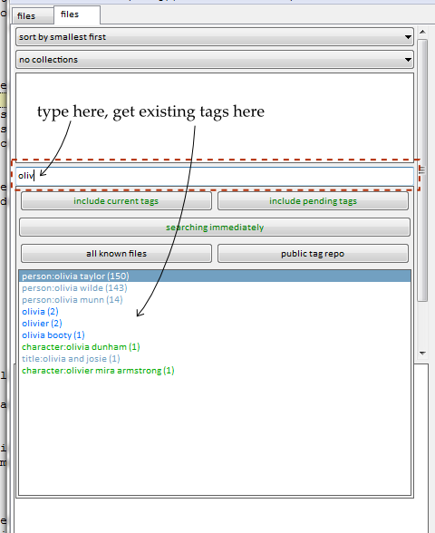

<--- Back to the installing and updating
a warning
This is the real internet, not babby AOL. The hydrus client gives you the power to screw up your life. If you want to do private sexy slideshows of your shy wife that's fine, but don't upload the pictures anywhere you don't absolutely trust and don't upload public tags that'll identify anyone. It is impossible to contain leaks of private information.
the problem
If you have ever seen something like this—

—then you already know the problem: using a filesystem to manage a lot of images sucks.
Finding the right picture quickly can be difficult. Finding all those by a particular artist or of a particular resolution can be impossible. Adding new files into the whole nested-folder mess is a further pain, and most operating systems bug out when displaying 10,000+ thumbnails.
so, what does the hydrus client do?
Let's first focus on importing files.
On first booting the client, you will be faced with a blank page. I advise you simply drag-and-drop a folder with a hundred or so images onto the main window. After a little parsing, a dialog will appear affirming what you want to import. Ok that, and a new page will open. Thumbnails will stream in as the software processes each file.

The files are being imported into the client's database. The client discards their filenames.
Notice your original folder and its files are untouched. You can move the originals somewhere else, delete them, and the client will still return searches fine. In the same way, you can delete from the client, and the original files will remain unchanged; import is a copy, not a move, operation. The client performs all its operations on its internal database. If you find yourself enjoying using the client and decide to completely switch over, you may delete the original files you import without worry. You can always export them back again later.
Now:
- Click on a thumbnail; it'll show in the preview screen, bottom left.
- Now double- or middle-click the thumbnail to go fullscreen. You can hit 'f' to switch between giving the fullscreen a frame or not. You can mouse-scroll or page up and down to browse the media, and double/middle-clicking again closes fullscreen. Hitting Enter/Return works just like double/middle click, as long as you have a thumbnail focussed.
- You can quickly select multiple files by shift- or ctrl- clicking. Notice how the status bar at the bottom of the screen updates with the number selected and their total size. Right-clicking your selection will present another summary and many actions.
- Hit F9 to bring up a new page chooser. It won't show much right now, because you are just started. You can navigate it with the arrow keys, your numpad, or your mouse.
-
On the left of a normal search page is a text box with a large pop-up dropdown. It looks like this:

This is the autocomplete tag entry, where you put in the predicates to do a search. The dropdown window only appears when the text box is focussed. If the text box is empty, the dropdown will show a number of 'system' tags that let you search by non-tag metadata such as file size or animation duration.
When you have some tags in your database, typing in the text box will show whatever begins with whatever you type. The following (number) shows how many files have that tag, and hence how large the search result will be if you select that tag. You can scroll the dropdown list with the arrow keys or ctrl + scrollwheel, and then hit enter or just double click to enter that tag/predicate into the current search.
There are also several buttons to play with:
- include current/pending tags - will determine whether the autocomplete results (and their counts) will be harvested from tags that currently exist, and/or the tags that are waiting to be sent to a service (more on this in getting started with tags).
- searching immediately - determines whether new searches will be performed as soon as you add or remove a search predicate, or whether the client will wait until you hit the button again. This is useful if you have a complicated query and don't want the simpler searches chuntering in the background as you enter every step.
- file repository/tag repository - determines the search domain. Selecting 'all known files/tags' will union all known file or tag services together. Be careful selecting both 'all known files' and 'all known tags', as queries (and even just the dropdown!) will be delayed!
- Once you are happy with the dropdown, try hitting 'system:size', and maybe change the resultant dialog's < to > or the 100KB to 1MB.
- You can remove from the list of 'active tags' above with a double-click, or by entering the same tag again through the dropdown.
- Play with the system tags more if you like, and the sort-by dropdown. The collect-by dropdown is advanced, so wait until you understand namespaces before expecting it to do anything.
- To close a page, middle click its tab.
The client currently supports the following mimetypes:
- image/bmp (.bmp - converted to image/png on import)
- image/gif (.gif)
- image/png (.png)
- image/jpeg (.jpg)
- application/x-shockwave-flash (.swf)
- application/pdf (.pdf)
- application/zip (.zip - extracted on import)
- audio/mp3 (.mp3)
- audio/ogg (.ogg)
- audio/flac (.flac)
- audio/x-ms-wma (.wma)
- video/x-flv (.flv)
- video/mp4 (.mp4)
- video/x-ms-wmv (.wmv)
The client can also download files from several websites, including 4chan, many boorus, and gallery sites like deviant art. The different options are under F9->download.
{kind=link}
Most of them have similar interfaces. Paste the url or type the query you are interested in, and press enter.
inbox and archiving
the client sends newly imported/downloaded files to an inbox so you may more easily decide what to do with them. Inbox acts like a tag, matched by 'system:inbox'. A small envelope icon is drawn in the top corner of all inbox files.
If you are sure you want to keep a file long-term, you should archive it, which will remove it from the inbox. You can archive from your selected thumbnails' right-click menu, or by pressing F7. If you make a mistake, you can spam Ctrl-Z for undo or hit Shift-F7 on any set of files to return them to the inbox.
Anything you do not want to keep should be deleted.
A quick way of doing this is—
filtering
Lets say you just downloaded a good thread, or perhaps you just imported an old folder of miscellany. You now have a whole bunch of files in your inbox—some good, some awful. You probably want to quickly go through them, saying yes, yes, yes, no, yes, no, no, yes, where yes means 'keep and archive' and no means 'delete this trash'. Filtering is the solution.
Select some thumbnails, and either choose filter->archive/delete from their right-click menu or hit F12. You will see this selection in fullscreen, with the following controls:
- Left-click, space, or F7: keep and archive the file, move on
- Right-click or delete: delete the file, move on
- Arrow key up: Skip this file, move on
- Middle-click or backspace: I didn't mean that, go back one
- Escape, return, or F12: stop filtering now
When done, you will be asked whether you want to commit your choices, forget them, or go back to filtering the current file.
This saves time.
lastly
The hydrus client is not an image-editing program, nor is it particularly intended for half-finished images. Think of it as a giant archive, a library, for everything excellent you have decided to store away.